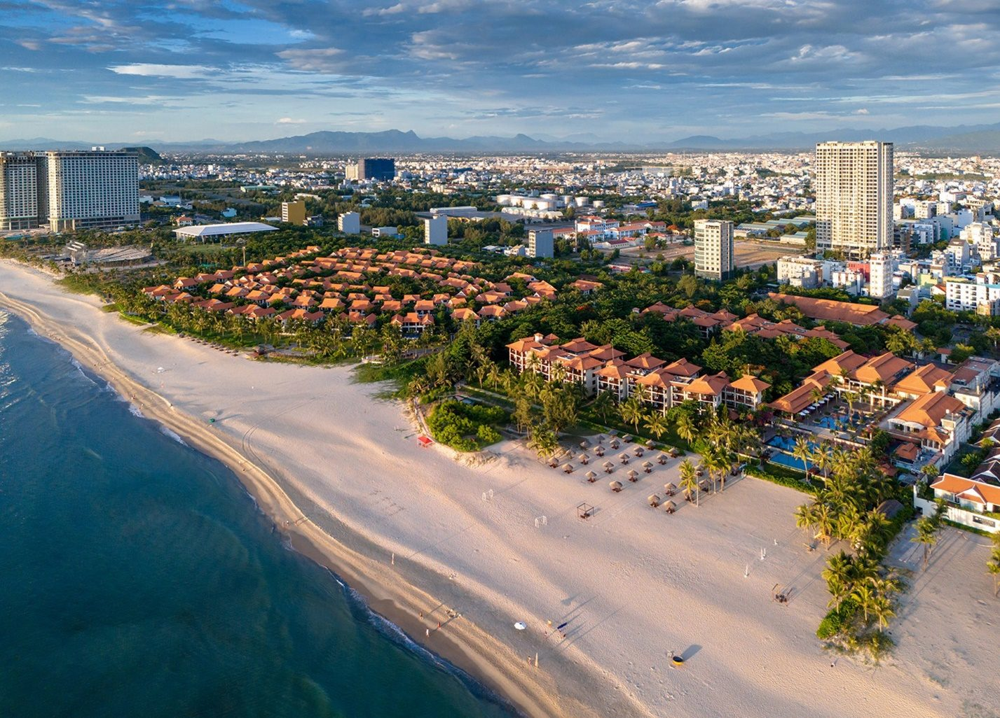

1
Session I
Cross-border Cooperation in Criminal Justice and the Resolution of Civil and Commercial Disputes in the Digital Era.
I. Home · Introduction
Hosted by the Supreme People's Court of the Socialist Republic of Viet Nam.
The 4th ASEAN–China Justice Forum is convened to further strengthen and deepen bilateral and multilateral judicial cooperation between the People's Courts of ASEAN Member States and the Supreme People's Court of the People's Republic of China. The Forum also contributes to advancing the ASEAN–China Comprehensive Strategic Partnership, promoting regional economic integration, and supporting the implementation of the policies of the Communist Party of Viet Nam and the State of Viet Nam on enhancing international integration in the field of justice.
The Forum serves as a high-level platform for judicial authorities to exchange views, share best practices and practical experiences on judicial reform, the adjudication of cross-border civil, commercial and criminal cases, as well as the development of e-Courts and the application of digital technologies and Artificial Intelligence (AI) in judicial proceedings.
The Forum also aims to reinforce the standing and role of the Supreme People's Court of Viet Nam within the ASEAN region and the international judicial community.
“Strengthening Regional Judicial Cooperation in the Context of International Integration and the Digital Era.”
The Forum will focus on the following two substantive sessions:
Cross-border Cooperation in Criminal Justice and the Resolution of Civil and Commercial Disputes in the Digital Era.
Sharing Experiences in the Development of e-Courts and the Application of Artificial Intelligence (AI) in Judicial Assistance and Future Prospects.
The Forum is hosted by the Supreme People's Court of the Socialist Republic of Viet Nam and will be held from 9–12 October 2026 at Furama Resort Danang, Da Nang City, Viet Nam.
2. Venue
